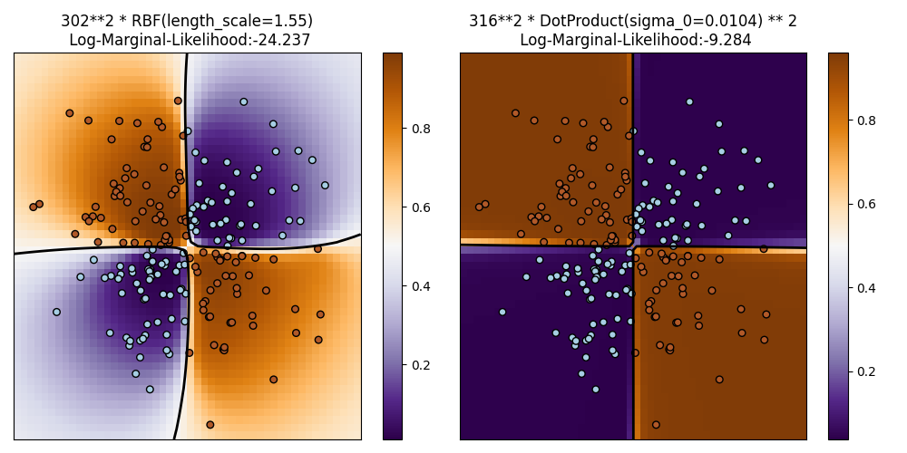

Note
Go to the end to download the full example code or to run this example in your browser via Binder
Illustration of Gaussian process classification (GPC) on the XOR dataset¶
This example illustrates GPC on XOR data. Compared are a stationary, isotropic kernel (RBF) and a non-stationary kernel (DotProduct). On this particular dataset, the DotProduct kernel obtains considerably better results because the class-boundaries are linear and coincide with the coordinate axes. In general, stationary kernels often obtain better results.
/root/scikit-learn-1.3.2/sklearn/gaussian_process/kernels.py:429: ConvergenceWarning:
The optimal value found for dimension 0 of parameter k1__constant_value is close to the specified upper bound 100000.0. Increasing the bound and calling fit again may find a better value.
# Authors: Jan Hendrik Metzen <jhm@informatik.uni-bremen.de>
#
# License: BSD 3 clause
import matplotlib.pyplot as plt
import numpy as np
from sklearn.gaussian_process import GaussianProcessClassifier
from sklearn.gaussian_process.kernels import RBF, DotProduct
xx, yy = np.meshgrid(np.linspace(-3, 3, 50), np.linspace(-3, 3, 50))
rng = np.random.RandomState(0)
X = rng.randn(200, 2)
Y = np.logical_xor(X[:, 0] > 0, X[:, 1] > 0)
# fit the model
plt.figure(figsize=(10, 5))
kernels = [1.0 * RBF(length_scale=1.15), 1.0 * DotProduct(sigma_0=1.0) ** 2]
for i, kernel in enumerate(kernels):
clf = GaussianProcessClassifier(kernel=kernel, warm_start=True).fit(X, Y)
# plot the decision function for each datapoint on the grid
Z = clf.predict_proba(np.vstack((xx.ravel(), yy.ravel())).T)[:, 1]
Z = Z.reshape(xx.shape)
plt.subplot(1, 2, i + 1)
image = plt.imshow(
Z,
interpolation="nearest",
extent=(xx.min(), xx.max(), yy.min(), yy.max()),
aspect="auto",
origin="lower",
cmap=plt.cm.PuOr_r,
)
contours = plt.contour(xx, yy, Z, levels=[0.5], linewidths=2, colors=["k"])
plt.scatter(X[:, 0], X[:, 1], s=30, c=Y, cmap=plt.cm.Paired, edgecolors=(0, 0, 0))
plt.xticks(())
plt.yticks(())
plt.axis([-3, 3, -3, 3])
plt.colorbar(image)
plt.title(
"%s\n Log-Marginal-Likelihood:%.3f"
% (clf.kernel_, clf.log_marginal_likelihood(clf.kernel_.theta)),
fontsize=12,
)
plt.tight_layout()
plt.show()
Total running time of the script: (0 minutes 1.557 seconds)